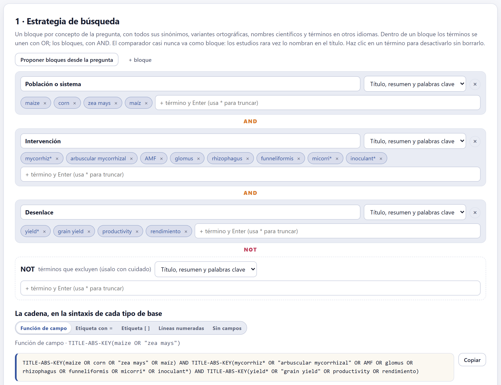
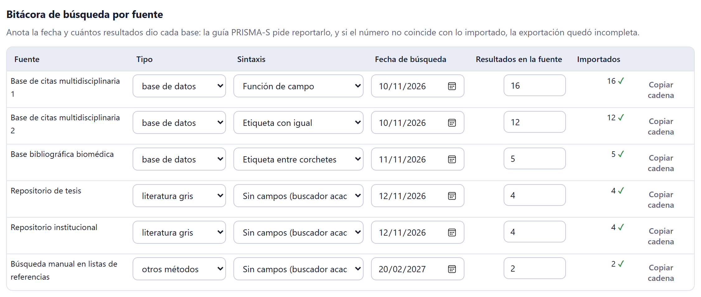
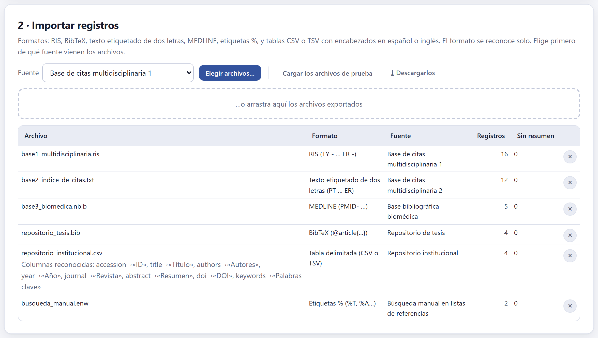
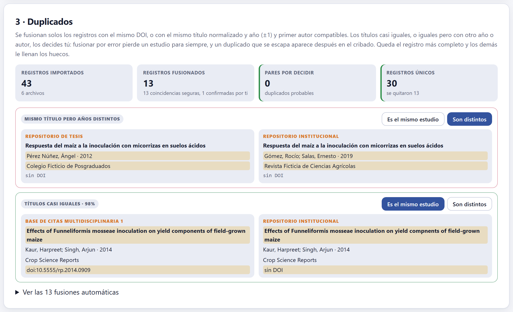
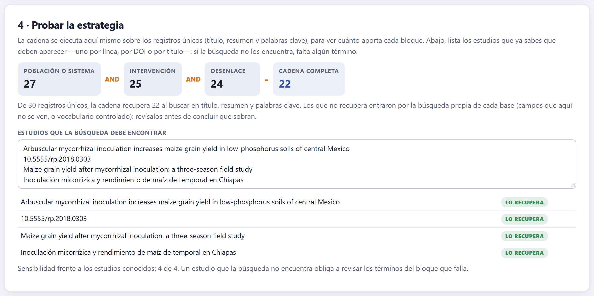
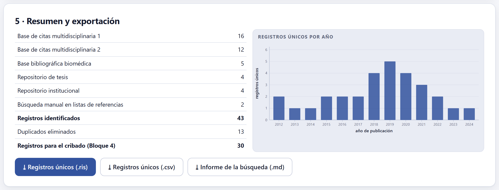

La estrategia se arma por bloques de conceptos y se escribe en la sintaxis de cada tipo de base de datos; la búsqueda se corre en cada base y sus resultados se importan aquí, en cualquiera de seis formatos. Luego se juntan los duplicados, con tu decisión en los casos dudosos, y se comprueba que la cadena encuentre los estudios que ya sabes que existen. Lo que sale es la lista de registros únicos que se cribará en el Bloque 4.
Una búsqueda sistemática se construye con un bloque por concepto de la pregunta —la población, la intervención, el desenlace—, y cada bloque reúne todos los modos en que un autor pudo haber escrito ese concepto: sinónimos, variantes ortográficas, nombres científicos, siglas y términos en otros idiomas. Dentro de un bloque los términos se unen con OR; los bloques, con AND.

mycorrhiz*) recoge mycorrhiza, mycorrhizal, mycorrhizae…| Proponer bloques desde la pregunta | Crea un bloque por cada elemento de la pregunta del Bloque 2 que se busca —en PICO, la población, la intervención y el desenlace— con las palabras significativas de ese elemento como primeros términos. Es un borrador: agrega los sinónimos. |
| + bloque | Agrega un bloque vacío; su nombre es libre. |
| Campo de cada bloque | Título, resumen y palabras clave (lo habitual), Solo título (más preciso, menos sensible) o Todos los campos. |
| Términos | Se escriben y se confirman con Enter. Una frase de varias palabras se entrecomilla sola. * trunca y ? reemplaza un solo carácter. Un clic sobre una ficha la desactiva sin borrarla (útil para probar); la ✕ la borra. |
| NOT | Términos que excluyen, restados de todo lo demás. Úsalo con cuidado: un NOT mal pensado quita estudios relevantes que mencionan de paso el término excluido. |
Un AND exige que todos los bloques aparezcan en el registro. Los estudios casi nunca nombran su testigo en el título o el resumen («sin inocular», «testigo absoluto»), así que un bloque de comparador descartaría muchos relevantes. La búsqueda debe ser sensible —no perder estudios— aunque traiga ruido: el cribado del Bloque 4 se encarga del ruido, pero nada recupera lo que la búsqueda no trajo.
Las bases de datos bibliográficas no hablan el mismo idioma. La app escribe los mismos bloques en cinco sintaxis, descritas por su forma y no por un producto; en la ayuda de cada base averiguas cuál usa.
| Sintaxis | Cómo se ve |
|---|---|
| Función de campo | TITLE-ABS-KEY(maize OR "zea mays") |
| Etiqueta con igual | TS=(maize OR "zea mays") |
| Etiqueta entre corchetes | maize[tiab] OR "zea mays"[tiab] |
| Líneas numeradas con sufijo | 1 (maize or zea mays).ti,ab,kw. — una línea por bloque y una final que los combina |
| Sin campos | maize OR "zea mays" — para buscadores académicos generales |
El botón Copiar lleva la cadena al portapapeles para pegarla en la base. Debajo, la app avisa lo que se debe cuidar en cada sintaxis; por ejemplo, «Los buscadores académicos generales no truncan: se quitó el asterisco. Escribe a mano las variantes que importen (singular y plural).»

Cada fuente declarada en el protocolo, y cada fuente de un archivo importado, tiene su renglón. Anota ahí la fecha de la búsqueda y cuántos resultados dio la base: PRISMA 2020 (punto 6) y su extensión para búsquedas, PRISMA-S, piden reportarlo. La columna Importados cuenta los registros que realmente entraron; si no coincide con lo que dio la base, aparece ≠: muchas bases exportan por lotes y una exportación incompleta es el error más común y más silencioso de una revisión.
El tipo de cada fuente (base de datos, literatura gris u otros métodos) es el mismo del Bloque 2 y se puede cambiar aquí; la sintaxis se elige por fuente, y Copiar cadena copia la cadena escrita en esa sintaxis. La fecha más reciente de la bitácora es el dato vivo {{search.date}} del Bloque 9.

| Formato | Cómo lo reconoce |
|---|---|
| RIS | Etiquetas de dos letras con guiones: TY - … ER - |
| BibTeX | Entradas @article{…}, con acentos de LaTeX que se convierten |
| Texto etiquetado de dos letras | Etiquetas sin guion, del tipo PT … ER, exportadas por índices de citas |
| MEDLINE | Etiquetas del tipo PMID- … |
| Etiquetas % | %T, %A… de los gestores de referencias |
| Tabla delimitada (CSV o TSV) | Encabezados en español o en inglés; el separador (coma, punto y coma o tabulador) y las columnas se detectan solos |
La columna Sin resumen cuenta los registros que llegaron sin resumen: se criban solo con el título y conviene saber cuántos son. Cargar los archivos de prueba importa los seis archivos ficticios del ejemplo y ⤓ Descargarlos los guarda, para ver cómo es cada formato por dentro.
Un mismo artículo aparece en varias bases, y un mismo experimento a veces en una tesis, un congreso y un artículo. La app los junta en dos niveles:
| Coincidencias seguras | Mismo DOI, o mismo título normalizado con el mismo año (±1) y un primer autor compatible. Se fusionan solas. |
| Pares por decidir | Títulos casi iguales (se muestra su parecido en %), o iguales pero con otro año o con otro autor. Los decides tú con Es el mismo estudio o Son distintos. |

En cada par, lo que difiere entre los dos registros aparece resaltado. Al fusionar, queda el registro más completo y los demás le llenan los huecos (un DOI, un resumen). Ver las N fusiones automáticas muestra lo que se juntó solo, por si quieres revisarlo.
Fusionar por error pierde un estudio para siempre: nadie lo vuelve a ver. Un duplicado que se escapa, en cambio, reaparece en el cribado y se excluye ahí con el motivo «duplicado». Por eso la app nunca fusiona sola un caso dudoso.
La tarjeta de fusionados cuenta registros quitados, y su nota cuenta pares. No siempre coinciden: si un estudio aparece en tres bases, sus tres copias forman tres pares, pero se quitan dos registros. En el ejemplo, 13 pares seguros y uno confirmado quitaron 13 registros: 43 importados, 30 únicos.

La cadena se ejecuta aquí mismo sobre los registros únicos, en título, resumen y palabras clave, para ver cuánto recorta cada bloque. Que la cadena recupere menos registros que los importados es normal: cada base busca también en campos que aquí no se ven, o en su vocabulario controlado. Revisa esos registros antes de concluir que sobran.
Lo más útil de esta tarjeta es la lista de estudios que la búsqueda debe encontrar: los que el equipo ya conoce antes de buscar, uno por línea, por DOI o por título. Si alguno no aparece, a la estrategia le falta un término, y la app dice cuál es la sensibilidad frente a esos estudios conocidos.
| Si un estudio conocido no se recupera | entonces léelo, busca cómo nombra cada concepto y agrega ese término al bloque que falla; vuelve a correr la búsqueda en las bases. |
| Si la bitácora muestra ≠ en una fuente | entonces la exportación quedó incompleta: vuelve a exportar por lotes. |
| Si una fuente trae muchos registros sin resumen | entonces considera exportar de nuevo con el resumen, o prepárate para leer más textos completos. |

Tres descargas: los registros únicos en RIS (para un gestor de referencias) y en CSV (para una hoja de cálculo), y el informe de la búsqueda en Markdown, con los bloques, la cadena en cada sintaxis, la bitácora y los duplicados: es el material suplementario que PRISMA 2020 pide en su punto 7.
«No hay bloques de conceptos», el aviso de truncamiento de la sintaxis sin campos, la marca ≠ de la bitácora y los pares por decidir. Mientras un par siga sin decidir, sus registros pasan al cribado como distintos.